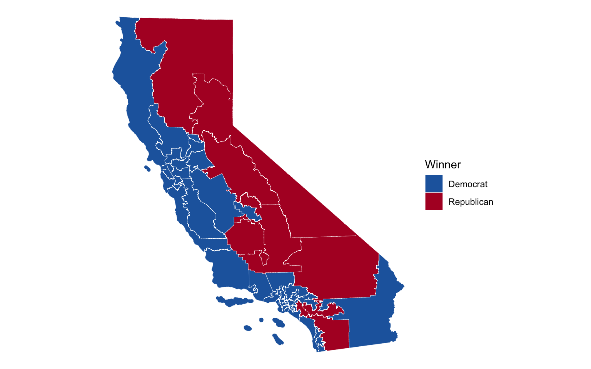
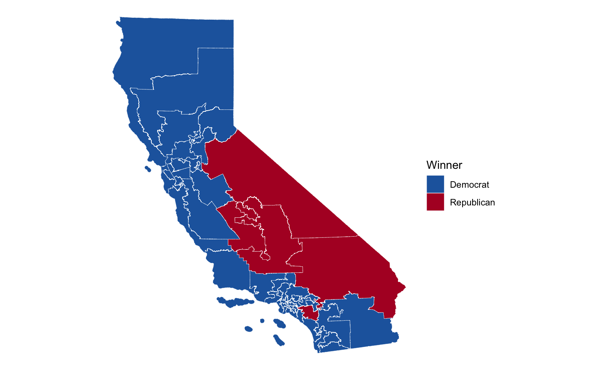
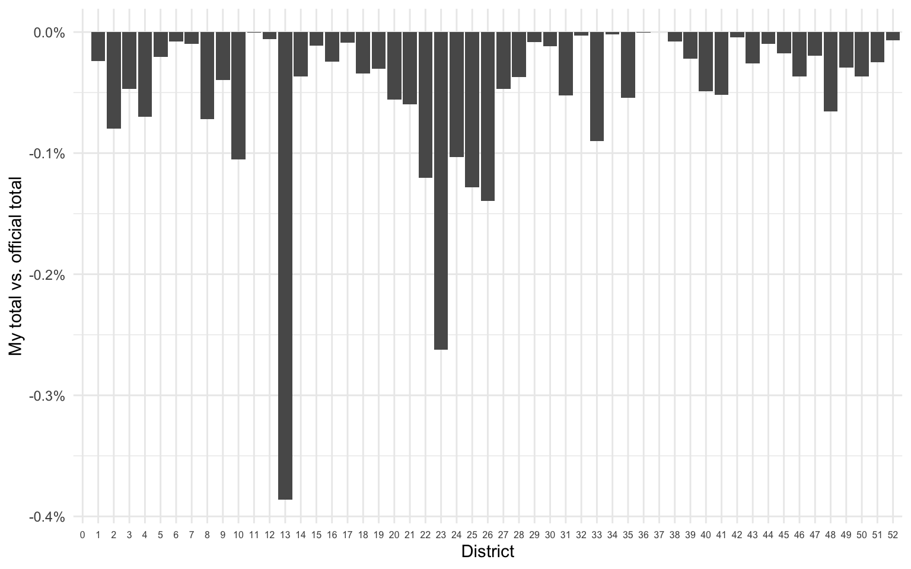
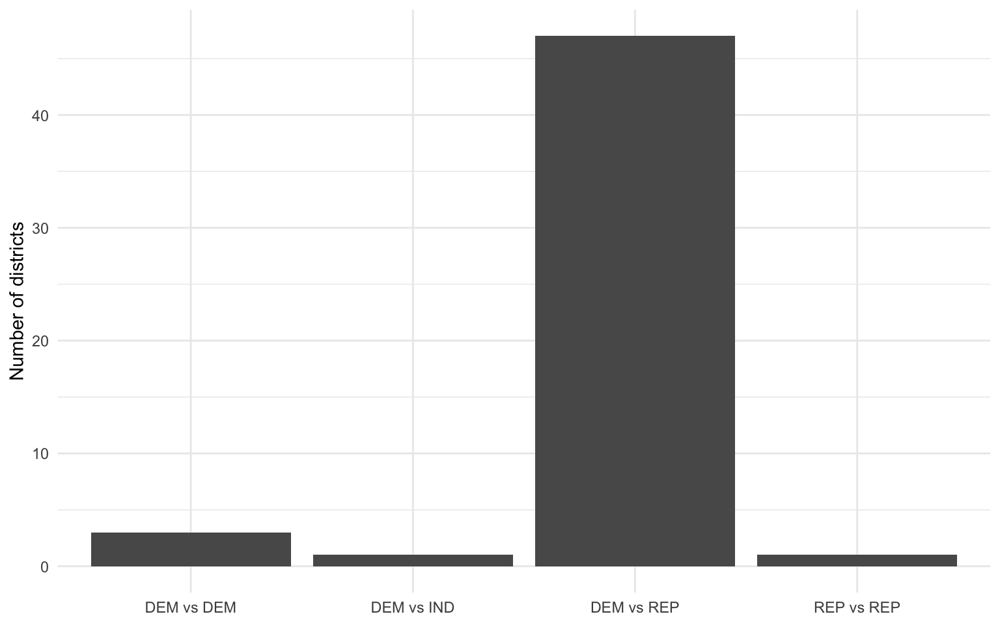
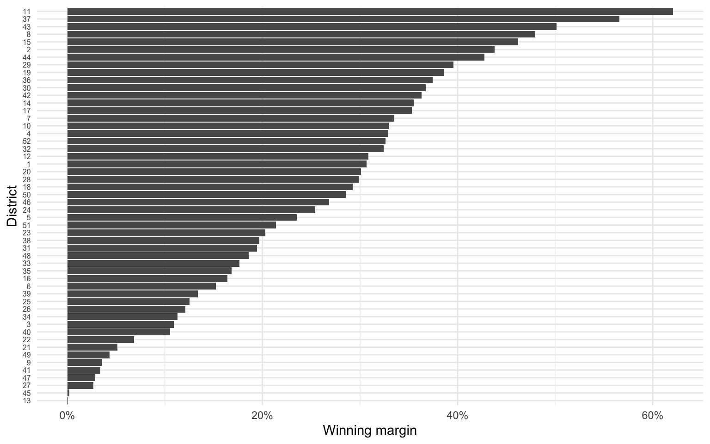
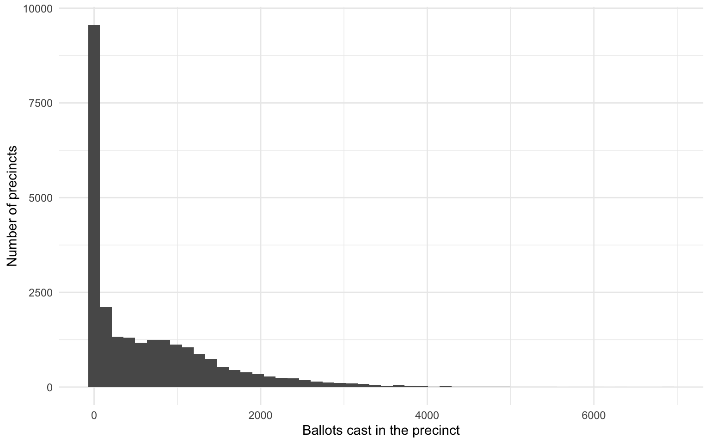
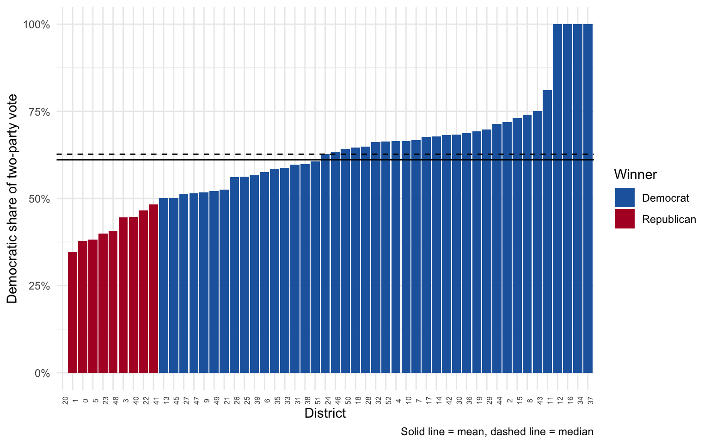
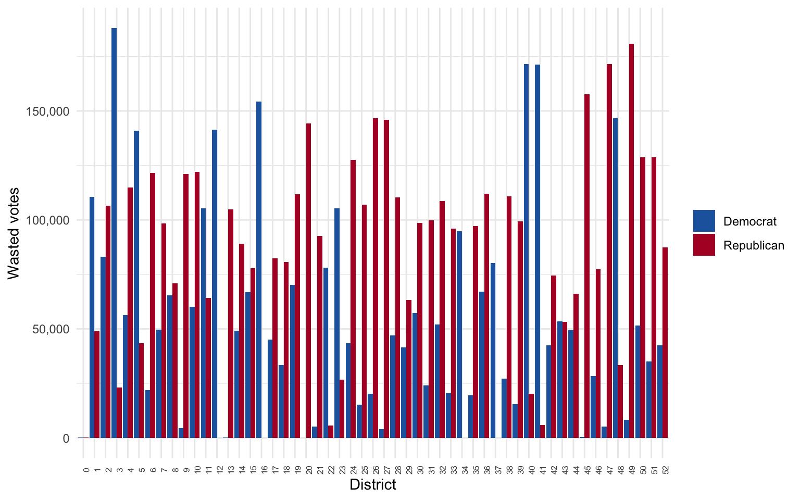

Democratic seats, 2024 map
43 of 52
Democratic seats, AB 604 re-run
46 of 52
Efficiency gap: 2024 → AB 604
9.2% → 17.9%
Mean-median: 2024 → AB 604
1.6% → -2.8%


| Map | Democratic seats | Republican seats | Mean-median | Efficiency gap |
|---|---|---|---|---|
| 2024 map | 43 | 9 | 1.6% | 9.2% |
| AB 604 map (re-run) | 46 | 6 | -2.8% | 17.9% |
Does the AB 604 map increase the Democratic partisan advantage? Re-running the 2024 congressional vote on the AB 604 map gives Democrats 46 seats instead of 43, a change of 3. The efficiency gap goes from 9.2% to 17.9% and the mean-median score from 1.6% to -2.8%. For both measures, positive favors Democrats.
CaveatsOn November 4, 2025, California held a statewide special election with one item on the ballot: Proposition 50, a constitutional amendment placed there by the Legislature. It passed with 64.4% of the vote (7,453,339 Yes to 4,116,998 No).
Since 2010, California’s congressional maps have been drawn by the independent Citizens Redistricting Commission which is a 14-member body (5 Democrats, 5 Republicans, 4 others) created by Propositions 11 (2008) and 20 (2010). The Commission’s map, drawn after the 2020 Census, was used in the 2022 and 2024 elections.
In 2025, Texas redrew its congressional map mid-decade to gain Republican seats. In response, California’s Legislature drew its own map, passed as AB 604, designed to increase the partisan advantage of Democrats. Proposition 50 required California to use the AB 604 map for the 2026, 2028, and 2030 congressional elections, in place of the Commission’s map. The number of districts stays at 52, and the Commission resumes drawing the maps after the 2030 Census. The key difference is who drew the lines and why: an independent commission bound by rules meant to limit partisanship, versus a legislature drawing with partisan intent.
The California Secretary of State publishes the official record of each election, including the certified Statement of Vote (results by county), a Supplement to the Statement of Vote (results by district within each county), and the official voter information guide with the measure’s text, analysis, and arguments.
Our vote counts come from the Statewide Database (SWDB), California’s official redistricting database. It began as a database built for the State Assembly’s 1981 redistricting; in 1993 the Legislature moved it to a nonpartisan home at the University of California, and it is now housed at the UC Berkeley School of Law. State law requires every county to send its registration and voting data to SWDB after each election, and SWDB processes and publishes it for free so that the Commission, local governments, and the public all redistrict from the same data.
For the 2024 General Election, SWDB publishes:
Limits of the data, from SWDB’s own notes:
*).From smallest to largest:
SV precincts are reporting units for counting ballots. Some have no real area of their own, such as mail-ballot groups or special precincts for voters whose addresses are confidential (for example, judges or domestic violence survivors). SR precincts are constructed by SWDB from registration geography, so each one is a real area on the map.
Votes are counted by SV precinct. SWDB sums each SR precinct’s SV precincts, so SR counts are exact aggregates of reported votes, not estimates. However, an SR precinct can be larger than any single precinct a county uses, and votes cast in non-geographic SV precincts are attached to whichever SR area contains them. The estimation in this project comes later, when we split SR precincts across the AB 604 districts (Part 5).
| File | Source | One row represents |
|---|---|---|
state_g24_sov_data_by_g24_srprec.csv |
Statewide Database, 2024 General | One SR precinct’s vote counts for every 2024 statewide contest |
g24-results-by-district.xlsx |
CA Secretary of State (via course template) | A formatted report: one block per district, one row per county within the district, plus name and party rows |
g24-candidates-by-district.csv |
CA Secretary of State (via course template) | One candidate in one race (Assembly, Senate, or Congress) |
state_g24_sr_blk_map.csv |
SWDB 2024 geographic data | One block–precinct piece and its registered voters |
ab604.csv |
Assembly Elections Committee | One census block and its AB 604 district |
AB604.shp |
Assembly Elections Committee | One AB 604 congressional district (52 rows) |
tl_2024_06_cd119.shp |
U.S. Census Bureau TIGER/Line, 2024 | One 2024 congressional district (52 rows) |
data/clean/sov_clean.csv |
Written in Part 2 | One SR precinct, cleaned, with party vote totals added |
Rows read
25,245
Masked small precincts
0
Clean data set
25,245 rows × 81 columns
| Problem | Action | Rows affected |
|---|---|---|
Vote counts stored as text, with * in masked precincts |
Replaced * with 0 and converted to numbers |
0 |
| Repeated precinct keys | Checked; none removed | 0 |
| Precincts with no congressional district | Kept, but left out of 2024 district totals | 0 |
| Party registration columns are all zero | Not used | 25245 |
| Madera County data are incomplete | Kept; listed as a caveat | 78 |
I read every column as text first. If R guesses a column is a number and finds something it can’t convert, it turns that value into NA without telling you, which would hide the problems I was looking for.
Masked precincts. The table of non-numeric values shows what was stored in the vote columns besides numbers. The Statewide Database hides the counts for precincts with fewer than 10 voters by writing *. I found 0 such precincts and counted them as 0 votes, since they are too small to change any district result.
Repeated precincts. 0 precinct keys appear more than once.
No district. 0 precincts have no congressional district, so they can’t be counted in a 2024 district. I kept them for Part 5, which places votes by location instead.
Party registration. The registration-by-party columns add up to zero statewide, which matches the Statewide Database’s note that the 2024 files still contain errors. I don’t use them.
Final data set: 25,245 precincts, saved to data/clean/sov_clean.csv.
| value | cells |
|---|---|
| *** | 86856 |
| column | statewide_total |
|---|---|
| TOTREG | 22580761 |
| DEMREG | 0 |
| REPREG | 0 |

I added up the precincts in each district and compared the totals with g24-results-by-district.xlsx. 1 of 52 districts match exactly. The biggest difference is in district 13 (-0.39%).
The differences come from masked precincts (counted as 0), Madera County’s incomplete data, and errors the Statewide Database says are still in the files. They are small compared with district totals.

California’s top-two primary sends the two leading candidates to November no matter their party. In 2024, 4 of 52 congressional races had two candidates from the same party.

The closest race was in district 13, decided by 0.09%. The biggest blowout was in district 11, decided by 62.1%.

Precincts range from 0 to 6,891 ballots cast, with a median of 308.
Seats (D–R)
43 – 10
Democratic two-party vote share
60.7%
Mean-median
1.6%
Efficiency gap
9.2%

Democrats won 60.7% of the two-party vote and 43 of 52 seats.
The mean-median score is the median district’s Democratic share minus the average district’s share. Positive means the typical district leans more Democratic than average, which favors Democrats. For the 2024 map it is 1.6%.

A vote is wasted if it went to the loser, or to the winner beyond the half needed to win. The efficiency gap is Republican wasted votes minus Democratic wasted votes, divided by all two-party votes. Positive favors Democrats. For the 2024 map it is 9.2%.
In districts where both candidates were from one party, all the votes count for that party.
I used Approach B (proportional allocation). Many 2024 precincts are cut by the AB 604 lines, so their votes have to be split. Census blocks are small enough that each one sits in a single AB 604 district.
The Statewide Database’s precinct-to-block file gives, for each block, the percent of the precinct’s registered voters who live there. I gave each block that percent of its precinct’s votes, looked up the block’s AB 604 district, and added the votes up by district.
Assumption: within a precinct, voters on every block voted the same way on average, so votes follow where registered voters live.
| Step | Value |
|---|---|
| Votes in the clean precinct data | 15,104,371 |
| Votes in the 52 AB 604 districts | 15,103,620 |
| Votes lost | 751 |
| Share kept | 100.00% |
| District | Democratic votes | Republican votes | Winner |
|---|---|---|---|
| 1 | 182536 | 150547 | Democrat |
| 2 | 231970 | 148401 | Democrat |
| 3 | 189935 | 164638 | Democrat |
| 4 | 189348 | 143688 | Democrat |
| 5 | 118108 | 229041 | Republican |
| 6 | 171008 | 151904 | Democrat |
| 7 | 189330 | 144663 | Democrat |
| 8 | 206138 | 95613 | Democrat |
| 9 | 150450 | 107208 | Democrat |
| 10 | 241492 | 122289 | Democrat |
| 11 | 274823 | 64326 | Democrat |
| 12 | 282994 | 7 | Democrat |
| 13 | 106097 | 93398 | Democrat |
| 14 | 182755 | 88548 | Democrat |
| 15 | 211545 | 77838 | Democrat |
| 16 | 303563 | 1222 | Democrat |
| 17 | 173840 | 81195 | Democrat |
| 18 | 148689 | 80974 | Democrat |
| 19 | 252380 | 111787 | Democrat |
| 20 | 18143 | 266917 | Republican |
| 21 | 95927 | 98000 | Republican |
| 22 | 79246 | 85059 | Republican |
| 23 | 104128 | 162504 | Republican |
| 24 | 214218 | 127631 | Democrat |
| 25 | 151325 | 113437 | Democrat |
| 26 | 189811 | 141056 | Democrat |
| 27 | 155380 | 128506 | Democrat |
| 28 | 200210 | 110832 | Democrat |
| 29 | 147599 | 66379 | Democrat |
| 30 | 213422 | 101066 | Democrat |
| 31 | 156576 | 118185 | Democrat |
| 32 | 207700 | 126246 | Democrat |
| 33 | 139520 | 98230 | Democrat |
| 34 | 189289 | 25 | Democrat |
| 35 | 140040 | 110457 | Democrat |
| 36 | 245999 | 111947 | Democrat |
| 37 | 160391 | 15 | Democrat |
| 38 | 137694 | 108221 | Democrat |
| 39 | 129199 | 98936 | Democrat |
| 40 | 160148 | 211998 | Republican |
| 41 | 172525 | 120963 | Democrat |
| 42 | 189315 | 149080 | Democrat |
| 43 | 160076 | 53152 | Democrat |
| 44 | 147262 | 53784 | Democrat |
| 45 | 152843 | 138564 | Democrat |
| 46 | 135824 | 84761 | Democrat |
| 47 | 184945 | 164007 | Democrat |
| 48 | 163694 | 155138 | Democrat |
| 49 | 206515 | 173227 | Democrat |
| 50 | 209472 | 151469 | Democrat |
| 51 | 201458 | 141837 | Democrat |
| 52 | 168463 | 94895 | Democrat |